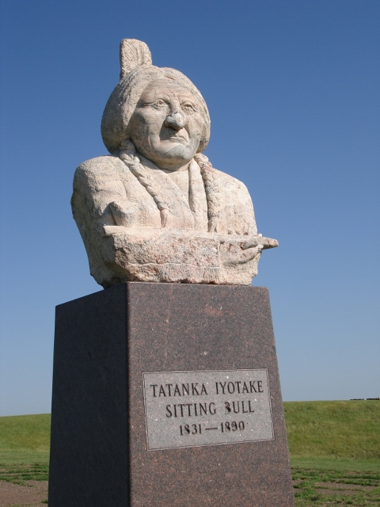

The Sitting Bull Monument is a nine foot tall monument with a concrete base, a polished granite pedestal, and a granite bust of Sitting Bull. The pedestal has an inscription “Tatanka Iyotake, Sitting Bull, 1831-1890. This monument is meant to commemorate and memorialize Sitting Bull in his final resting place in the Standing Rock Reservation.
Tatanka Iyotaka, or Sitting Bull, was a Teton Dakota Native American chief known for his great vision and leadership. In 1874, gold was discovered in the Black Hills, which at the time was part of the Grand Sioux reservations. Despite these lands being reserved by treaties, white settlers rushed to these areas and conflict began to grow between these groups. Sitting Bull organized a resistance movement against the US expansion and encroachment of these treaty-reserved lands. At one point, Sitting Bull’s village battled and won against General George Marnstong Custer’s force in the battle of Little Bighorn. However, in 1881, due to food and resources being scarce, Sitting Bull surrendered to the U.S. Army in exchange for amnesty for his people. He was a prisoner of war for two years at Fort Randall before being moved to Standing Rock Reservation.
On December 15, 1890, Sitting Bull was killed by Indian police, after an arrest warrant had been placed after it was known that he planned on attending a Ghost Dance revivalist ceremony. It was feared that these Ghost dances would incite rebellion. His remains were first buried in Fort Yates. These remains were then relocated by one of Sitting Bull’s descendants by marriage, who was also one of the sons of the Indian police officers that arrested Sitting Bull, and a group of business men from Mobridge. They did this by using a BIA letter as justification for relocating his remains to the Standing Rock Reservation.
Soon after the relocation, this monument was created by Korczak Ziolkowski, who was also the artist behind the Crazy Horse monument. Ziolkowski did not attend the dedication ceremony for this monument because he feared this ceremony was being exploited for economic and political gain. This set the precedent for the monument not being commercialized or exploited for financial gain. The monument sits in a serene, isolated spot, and is free to all visitors.
The monument commemorates a legendary Native American hero, Sitting Bull. He was the first man to become chief of the entire Lakota Sioux nation, and was known for his strong aversion and resistance to US expansion and encroachment of Sioux Land. He is a symbol of Native American resistance movements and a source of great pride to his people. A memorial to Sitting Bull stands as a reminder of the past violence between indigenous people and the US, and the injustices natives faced and still face when it comes to their land. It is also a reminder that Native American tribes and communities have heroes in their history that they revere as well.
We suggest that you visit the Sitting Bull Monument so you can reflect on the great hero it depicts. This monument is located in a peaceful, secluded area that allows visitors to ponder and pay their respects. However, we stress that the land here is treated with respect, as it is where Sitting Bull’s remains are now buried, and is hence a landmark of great significance.
Google Maps Link